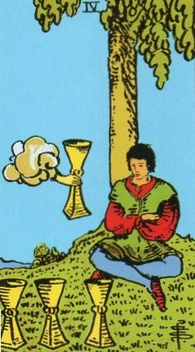
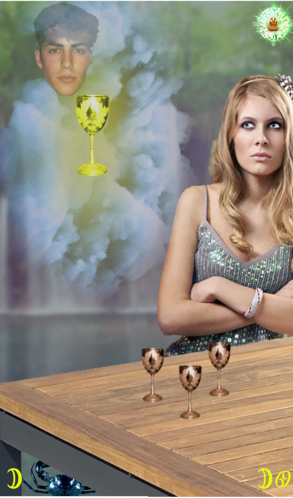
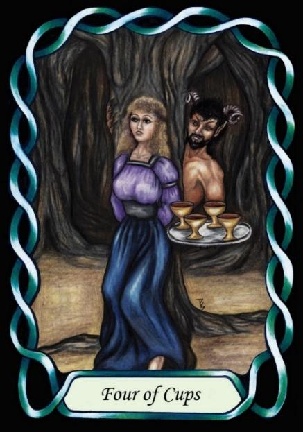

Four of Cups



Sign |
|
Fourth: Home |
|
Sign Ruler |
|
Element |
Water: emotions |
Modality |
|
Symbol |
Crab |
Decan |
|
Decan Ruler |
|
Time |
Jul 13 -22 |
Persuader Cancer III
A Master of emotions, doubly influenced by the Moon, is superb at persuading others. Like the Moon’s pull on the tides, they can pull others along behind them, and even make them think they are happy to do so. In home life, the partner will have a pleasant life, but it won’t really be theirs. The illusion of the Moon will be complete.
These people are like Fairies or Vampires, with each able to spellbind, mesmerise or glamour people.
Examples: Ryle Cody, Neely Kade, Richard Branson and Donald Sutherland.
Goldschneider Personology
As dominant and forceful individuals, these people like to get their own way through persistence and persuasion, and can also stubbornly resist the persuasions of others. They desire that their will be done, not that of others. Fortunately, their personal charisma usually allows them this luxury.
RWS Imagery
A person sits with arms folded, ignoring the three material Cups before them, but their imagination envisions a perfect cup – the Ace of Cups. This vision is woven by a person behind the cloud. This person is the persuader, Master of emotions, able to weave a spell of persuasion through mastery of emotions.
Pymander Interpretation
Note the strong aspect of sexual persuasion in the Pymander card, as it is traditionally the responsibility of the man to “persuade” the woman. The Moon is often attributed to dreams and illusion.
Summary
Emotional mastery, charisma, and persuasion. Individuals born under this decan possess spellbinding abilities, emotional control, and dominant personalities, but may struggle with emotional manipulation and unhealthy relationships.